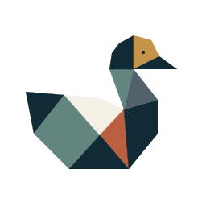

SUMpossible
A mathematical puzzle game built around expression discovery, progression and carefully validated puzzle generation.
Puzzles · Product
Patitos FortuneCreative Software Lab · Malta · Est. 2025
Patitos Fortune is a small, independent software lab working across games, data, research and decision tools.
Selected work
We like problems with enough structure to test, enough uncertainty to explore, and enough personality to be worth building.
A mathematical puzzle game built around expression discovery, progression and carefully validated puzzle generation.
Puzzles · ProductA knowledge-discovery system for turning outside ideas into tested, reusable methods instead of a pile of bookmarks.
Research · LearningDecision-support software that turns complex game systems into explainable, testable recommendations.
Tools · Decision systemsSmall experimental systems for game design, probability, behavioural modelling and quantitative analysis.
Simulation · DataHow we work
Claude is part of our day-to-day research, implementation, review and experimental workflow. We use AI agents to turn specifications into tested artefacts, challenge assumptions, review evidence and accelerate iteration without outsourcing judgement.
Specify before scaling.
Test claims, not vibes.
Keep the human decision visible.
People
Product, games and quantitative research.
Data, analytics and decision systems.
Say hello